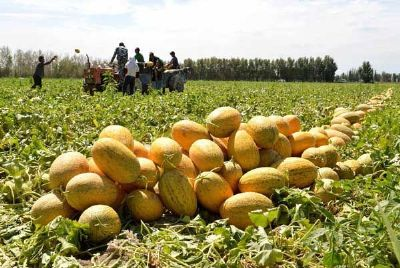
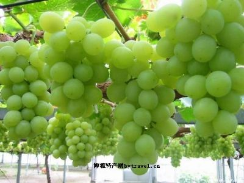
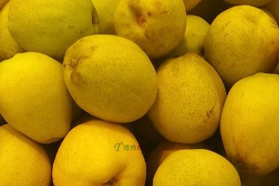
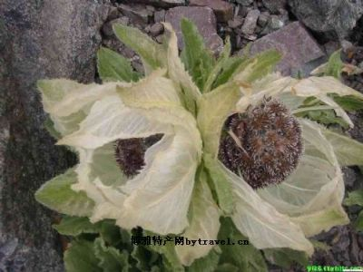
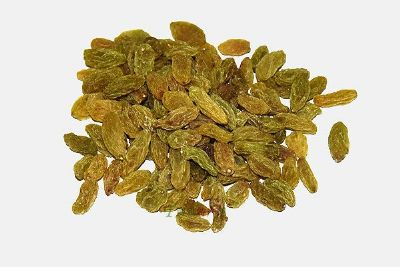
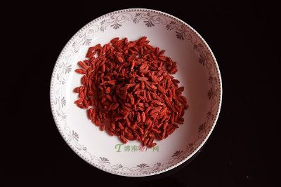
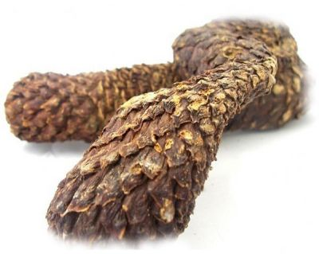
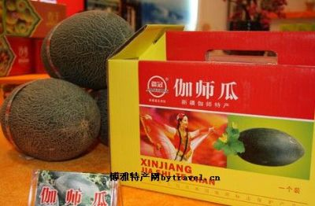

哈密瓜在新疆有2000多年的栽培历史，称为“天下第一瓜”，其肉色如晶玉、风味独特、品质优良，畅销国内外。哈密瓜，色、香、味俱佳，瓜肉肥厚，香甜清脆，含糖量高（最高者达21%），“色黄明如缎”、“瓜熟时到口即融，无滓”。哈密瓜松脆汁多，甜而不腻。 哈密瓜有悠久的历史，早在汉代，哈密一带就普遍栽培哈密瓜，不过当时不叫哈密瓜，只称“甜瓜”。至清初康熙年间，“自康熙初，哈密投城，此瓜始入贡，谓之哈密瓜”。哈密瓜现有黄蜜宝、红蜜宝、金蜜宝、早金、西域一号、洋香瓜、华西蜜二号、农抗黄金龙、新蜜11号等多个品种。哈密瓜地理标志产品保护范围为新疆维吾尔自治区哈密市所辖行政区域，具体为东起骆驼圈子，西至柳树泉农场；北起水管处园艺场，南至南湖乡，位于哈密盆地中部，地理坐标为东经90°08′至96°23′，北纬40°43′至43°43′，东西长150公里，南北宽35公里的狭长地带；伊吾县所辖行政区域，具体为伊吾河下游淖毛湖区域(含下马崖、苇子峡)，东起下马崖阿热买力村，西至淖毛湖开发区，北起长城公司，南至苇子峡乔尔乔村，地理坐标为东经94°32′至95°00′，北纬43°00′至43°50′；巴里坤县所辖行政区域，具体为三塘湖乡区域，东起岔哈泉村，西至下湖村，北起下湖村，南至上湖村，位于城东北74公里处，地理坐标为东经93°09′至94°49′，北纬43°50′至45°43′；吐鲁番市所辖行政区域，具体为东起二堡乡的火焰山村，西至艾丁湖乡的也木西村、-子村、西然木村、亚尔乡的西沟村、交河古城以东，北起胜金乡幸福村、红星村、红柳河园艺场的一碗泉以南，南至恰特卡勒乡的曙光村，艾丁湖乡的红星渠以北；兵团农十三师221团东起交河古城，西至大旱沟，北起312国道，南至艾丁湖，地理坐标为东经87°65′至90°10′，北纬42°30′至43°13′；鄯善县所辖行政区域，具体为东起七克台镇的亚坎村，西至312国道和吐峪沟乡与二堡乡的交界处，北起天山脚下的柯柯亚村，南至迪坎乡的迪坎村，地理坐标为东经89°29′至89°54′，北纬42°31′ 至42°47′；托克逊县所辖行政区域，具体为东起郭勒布依乡红山村，西至阿拉沟，北起312国道，南至觉罗塔克山以北，地理坐标为东经87°14′ 至89°14′，北纬41°21′ 至43°18′。 
新疆吐鲁番是葡萄的故乡，也是葡萄的王国。据史书记载，早在2000多年前西汉时期张骞出使西域，就发现这里种值葡萄。由于这里气温高、日照时间长、昼夜温差大，特别适合葡萄的生长和糖份的累积。 吐鲁番的葡萄，似珍珠，象玛瑙，晶莹剔透，甜嫩多汁，令人垂涎欲滴。这里的品种繁多，现有无核白、红葡萄、黑葡萄、玫瑰香、白布瑞克等500多个优良品种，堪称“世界葡萄植物园”。 利用热风，自然荫成的葡萄干，碧绿甘美，酸甜可口，倍受人们的青睐，畅销国内外。 
库尔勒市位于新疆巴音郭楞蒙古自治州北部，天山南麓，是一个肥沃的绿州。这里出产的香梨最为有名，素有“梨 乡”之美称。库尔勒香梨，维吾尔叫“奶西姆提”，它以皮薄、肉脆、汁多、味甜、 酥香、爽口，耐贮藏，营养丰富等特点驰名中外。印度人称它是“中国的王子”， 其珍贵由此可见一斑。据晋代葛洪撰《西京杂记》记载：“瀚海梨，出瀚海北，耐寒不枯”。此“梨”指 的就是库尔勒香梨、库尔勒地区栽培香梨，距今已有2000多年的历史。地域范围库尔勒、尉犁、轮台、库车、新和、沙雅、阿克苏、阿瓦提和分布在这些地区里的国营园（团）场 特定品质库尔勒香梨皮极薄，去皮硬度4.8kg/cm2，带皮硬度13.0 kg/cm2，库尔勒香梨带皮入口后没有任何残渣感觉，采摘时，从树上掉下来，即成碎片，入口消融，甘甜酥脆，回味悠长。果实含水量84.5-86%，可溶性固形物13.4-15%，汁液丰富，味美甘甜、酥脆爽口，是目前国内外梨品种都无法媲美的。 
新疆雪莲,别名雪荷花.主要生长于天山南北坡.阿尔泰山及昆仑山雪线附近的高旱冰碛地带的悬崖峭壁之上。 雪莲是新疆的著名特产.早在清代,赵学敏著的;本草纲目拾遗;艺术中就有大寒之地积雪,春夏不散,雪间有草,类荷花独茎,婷婷雪间可爱和其地有天山,冬夏积雪,雪中有莲,以天山峰顶者为第一的记载.关于雪莲的形态和生境,贾树模一九三六年在;新疆杂记;中就有这样的描述: 雪莲为菊科草本......生雪山深处,产拜城.哈密山中. 雪莲,在医药上应用以有数百年的历史.汉族人民多视为治疗风湿关节炎之珍品;维吾尔.哈萨克族则当作妇科良药. 雪莲种类繁多,如水母雪莲.毛头雪莲.绵头雪莲.西藏雪莲等. 新疆雪莲,在;本草纲目拾遗;的记载中被视为正品.以天池一带的博格达峰所产者,质量最佳,并且有神秘色彩.过去高山牧民在行路途中遇到雪莲时,被认为有吉祥如意的征兆,并以圣洁之物相待.据传,这雪中之莲花,是瑶池王母到天池洗澡时由仙女们撒下来的,对面海拔五千多米的雪峰则是一面漂亮的镜子.雪莲被视为神物.饮过苞叶上的露珠水滴,则认为可以驱邪除病,延年益寿.
雪莲种子在零摄氏度发芽,三到五摄氏度生长,幼苗能经受零下二十一摄氏度的严寒.在生长期不到两个月的环境里,高度却能超过其他植物的五到七倍,它虽然要五年才能开花,但实际生长天数只有八个月.这在生物学上也是相当独特的.雪莲形态娇艳,这也许是风云多变的复杂气候的结晶吧!它根黑.叶绿,苞白.花红,恰似神话中红盔素铠.绿甲皂靴.手持利剑的白娘子,屹立于冰峰悬崖.狂风暴雪之处,构成一幅雪涌金山寺的绝妙画图. 
吐鲁番在新疆中部的低洼盆地上，被称为火洲。是我国葡萄主要生产基地，由于这里气温高、日照时间长、昼夜温差大，气候干燥，秋季气温高，常刮干热风，特别适合葡萄的生长。吐鲁番市胜金乡是一个典型的少数民族聚居区，全乡聚居着维吾尔、汉、回等3个民族，总人口25009人，维吾尔族23819人，占总人口的95.2%;汉族665人，占总人口的2.7%；回族531人，占总人口的2.1%。胜金乡的气候属典型的暖温带干旱荒漠气候。日照时间长，气温高、降水稀少、风力强大。但 因有大量雪水滋润，全乡土壤质地为盐化黄粘壤土及轻盐化棕黄粘土，土壤肥力中等，含钾丰富。适宜种葡萄、粮食、棉花等各种植物。全乡重点发展葡萄、蔬菜、林果业、畜牧业，在全乡各族人民的努力下，2012年全乡实现农牧民人均纯收入6382元，人均增收632元，增长11%。
产品特性：吐鲁番葡萄干，经本地特有凉房纯自然风干，采用美国、日本的先进设备和技术精制而成。产品色泽纯正、风味独特，不含任何添加剂和色素，并含有丰富的天然果糖、蛋白质、维生素、纤维素以及人体所需的多种微量元素铁、钾、钙、磷、镁等营养成份，具国外科学界鉴定，葡萄干中含有一种特殊的抗癌物质，是一种多用途纯天然健康食品。葡萄具有“补血强智利筋骨，健胃生津除烦渴，益气逐水利小便，滋肾益肝好脸色”的功效，平常多吃葡萄，可以缓解手脚冰冷、腰痛、贫血等现象，提高免疫力。 
精河枸杞素有“红玛瑙”之称，其果实鲜红、粒大饱满、皮薄肉厚、含糖丰富、药用价值高，颇受消费者青睐。新疆精河县是我国枸杞的起源地之一，在国内枸杞资源中排在前列，有丰富的枸杞种质资源。精河县还分布有大量野生枸杞资源，精河县是黑果枸杞、宁夏枸杞、新疆枸杞等起源地，有着50年的栽培历史，成为我国枸杞主要集中产区之一。 精河枸杞是新疆红色产业的重要组成部分，更是精河县独具特色的优势支柱产业，枸杞面积及产量在农业产业结构中占重要地位。1988年精河枸杞总产量第一次赶上宁夏，到2010年精河栽植面积已达10.73万亩，年产量13000吨，单产178公斤，总产值41596万元，占农业总产值的35%，枸杞产业收入在农民纯收入中的比例达到16%。 精河县独特的地理、气候条件使这里出产的枸杞品质优良、闻名遐迩，出产的枸杞以色泽鲜红、果粒大、肉丰厚、富营养、味甘美，果实内含物饱满没有空隙，是理想的药食兼用营养保健珍品。每到收获季节，国内外客商云集精河，购销两旺，远销欧美、日本、东南亚各国和港、澳、台地区，享誉国内外市场，赢得了“精河枸杞甲天下”的美誉。 
和田肉苁蓉新疆维吾尔自治区和田市、和田县、皮山县、墨玉县、洛浦县、策勒县、于田县、民丰县现辖行政区域《和田地区行政公署关于申请划定和田肉苁蓉地理标志产品产地范围的函》，和行函〔2015〕109号新疆和田地区农业地方标准：DBN6532/T50-2007《和田肉苁蓉》 
伽师瓜是招待嘉宾的珍品，由于有高量多种维生素和植物纤维，维生素C含量居各类水果之冠，常食用有清痰止咳、清凉解热、润肺滋肝、帮助消化、增进食欲、润肤美容，促进血液循环和新陈代谢之功效，特别对小孩和孕妇有促进发育、强身健体功效，晚餐后食用，还能起到一定安神催眠作用。伽师，维吾尔语称“排孜阿瓦提”意为美丽富饶的地方。伽师县位于新疆维吾尔自治区西南部，隶属喀什噶尔冲积平原中下游，地处北纬39°17′—39°47′，东经76°20′—78°05′。被誉为“中国瓜王”、“西域珍品”的伽师瓜产于此地。伽师瓜果实营养丰富，含糖量高，维生素C含量远比西瓜、葡萄、苹果多。甜瓜营养成份对人体有益，《本草纲目》记载：“甜瓜瓜瓤可止泄，除燥热，利小便，治口鼻疮。暑月食之 下中暑。”我国民医还常用甜瓜来辅助肾病、胃病、贫血病等。伽师瓜种植可以追溯到公元四世纪。1959年自治区考古工作者在巴楚县脱库孜沙来挖掘出分属三个朝代（南北朝、北宋、元末到明初）古墓中发现甜瓜种壳，其中属于南北朝（公元四至五世纪）A墓内有11粒甜瓜籽壳。具1984出版的《新疆甜瓜》作者考证，出土的甜瓜种壳外形为不同品种的甜瓜种子，与现有栽培品种的种子外形十分相似。由此说明早在1500年前伽师瓜产区就已经有甜瓜种植，且种类较多。解放以来，甜瓜种植在产区十分普遍，品种繁多，其中以卡拉库赛品种种植面积最大，占产区甜瓜总面积的80%以上。1958年伽师县把伽师原产地产的卡拉库赛品种瓜作为礼品送往北京，受到党中央领导的称赞。1985年以后伽师县把卡拉库赛品种甜瓜作为名优果品和支柱产业大力发展，并相继在京、沪、穗、沈、杭等20多个省区和40多个大中城市举办品尝会，受到当地专家、群众一致赞赏。因这种瓜产自伽师，此后世人称卡拉库赛甜瓜为伽师瓜。从此，伽师瓜开始走出新疆，销往全国。 